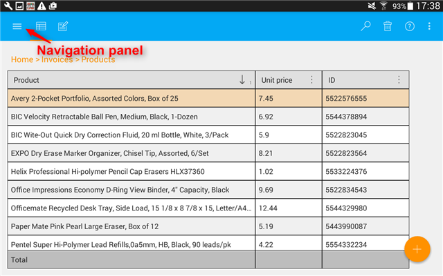
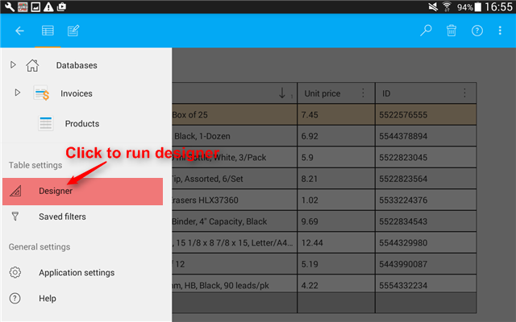
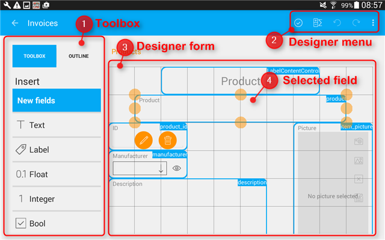
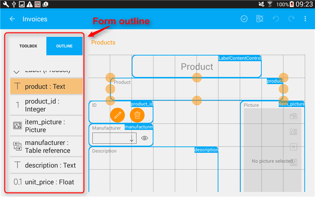
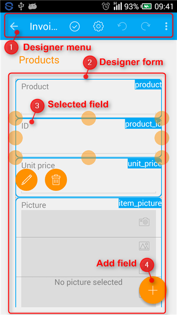

Form designer
MobiDB Database Designer offers a convenient visual form designer that helps users create forms (card view of an entry). It opens automatically when you create a new database and add at least one table. You are offered to set designer grid properties, such as number of columns in the grid. This setting allows more precise location of the controls on the form and allows more optimal use of space on a screen. The designer can also be opened from the existing table or card by pressing the corresponding menu item in the navigation panel.


This is how designer looks on a tablet:


Toolbox
Toolbox contains a list of all available fields. A user can add fields onto the form by simple drag-and-drop.
Outline
Outline contains a list of all fields added to the form. It shows field type and name of a field used in formulas.
Designer form
Designer form is a working area where all fields are added. A user can change control size and location on a form to achieve an optimal card look and feel.
Designer menu
This is how designer looks on a phone:

Designer form
Designer form is a working area where all fields are added. A user can change control size and location on a form to achieve an optimal card look and feel.
Designer menu
Phone designer menu provides access to the following options: save and exit, table calculable expressions, undo, redo, and more options.
Confirm all changes by tapping the icon and proceed to adding entries